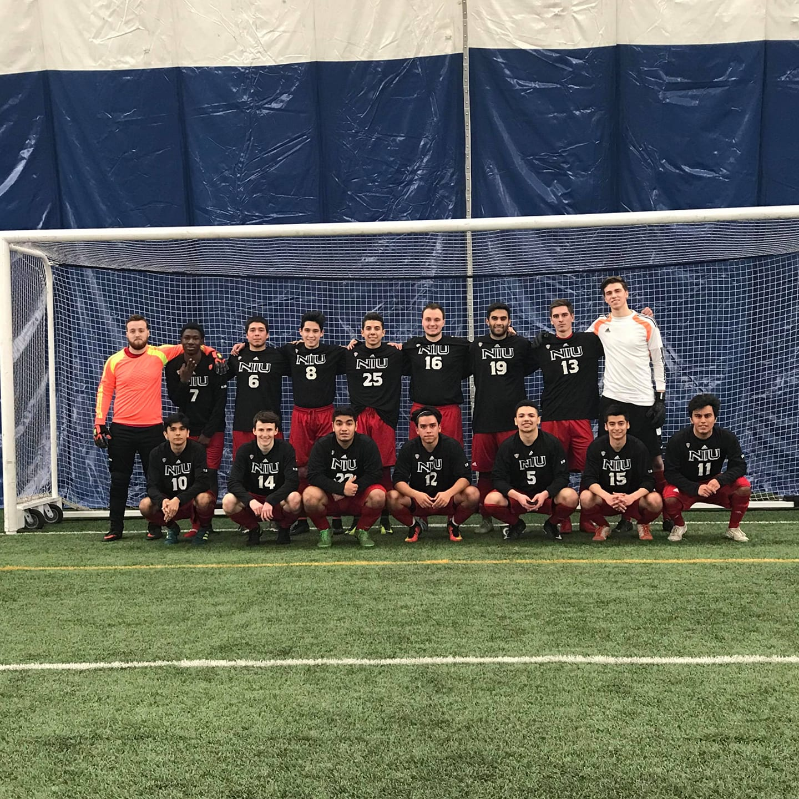
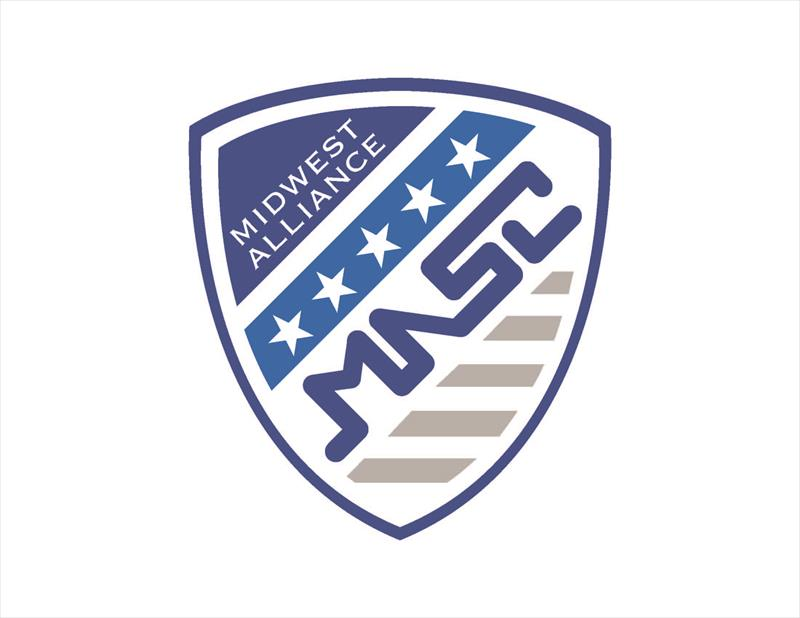

NIU Men's Soccer Club

My Freshman year I tryed out for the Northern Illinois University Men's Soccer Club.
At the time it was a small program of about 15 guys that played recreationally
and played friendlies against teams like Iowa University. A year later I wanted to
help the club grow so I ran for Treasurer. I was voted as the treasurer for the club and I
helped the team develop and ultimately join an elite conference known as the Midwest
Alliance Soccer Conference. I am now the president of the club and will continue
as president into my Senior year.

This is the crest for the MASC conference.